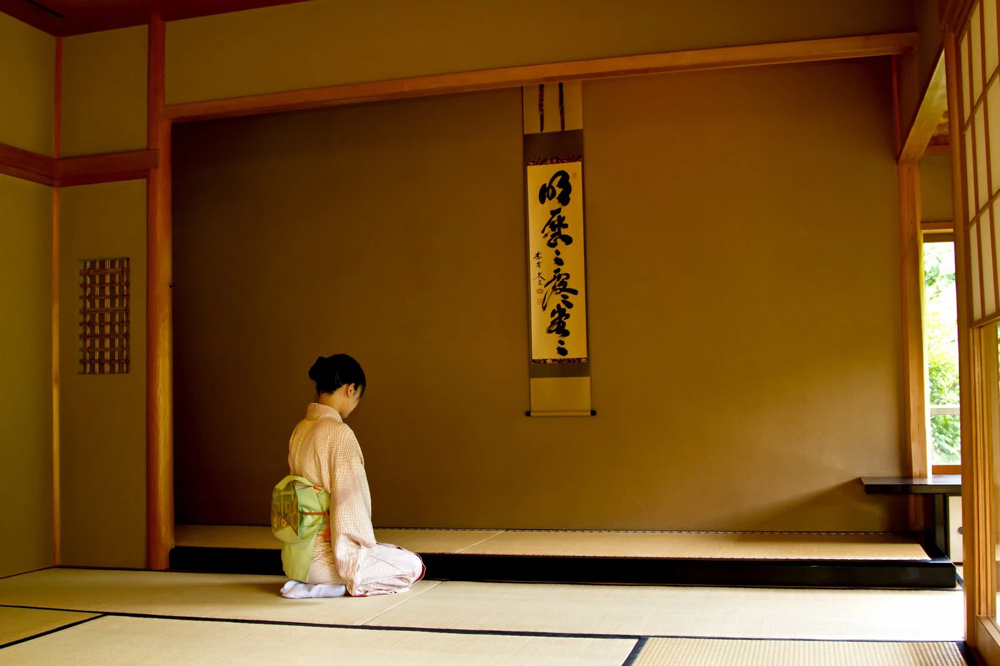

貴久庵
茶の湯は、お茶を点てる技術だけを学ぶものではありません。
季節の移ろい、道具の取り合わせ、相手を思う心。
一つひとつの所作を通して、日本の美意識に触れていきます。
山梨県甲府市、善光寺にある表千家茶道教室「貴久庵」。
茶の湯を通じ、季節を感じる心、互いを尊重し合う心を
大切にしながらお稽古をしています。
小間と広間（松風楼の写し）の茶室でお稽古をしています。
水屋の設備もあります。
お稽古は客の所作から始め、半東の稽古、点前の割稽古、
薄茶の運び点前、棚物、お濃茶と進みます。
家元への入門、免状の取次もいたします。
お稽古では茶の湯を通じ、季節を感じる心、
互いを尊重し合う心を高めていける様心がけています。
初めて茶道に触れる方から、経験のある方まで。 一人ひとりのペースに合わせてお稽古を行います。
お辞儀や歩き方、道具の扱い方など、 茶道の基本となる所作から丁寧に学びます。
点前の割稽古から薄茶の運び点前、 棚物、お濃茶へと、段階に応じてお稽古を進めます。
道具や掛物、花などを通して、 季節とともにある茶の湯の文化を楽しみます。

まず稽古日に見学に来ていただき、
月謝のこと、稽古日のことを説明いたします。
日常とは離れた空間に身を置き、
茶室で五感を使って様々なことを感じとってみませんか。
日常が新しく見えてくるかもしれません。
お待ちしてます。
まずは稽古日に見学にお越しください。
月謝やお稽古日についてご説明いたします。